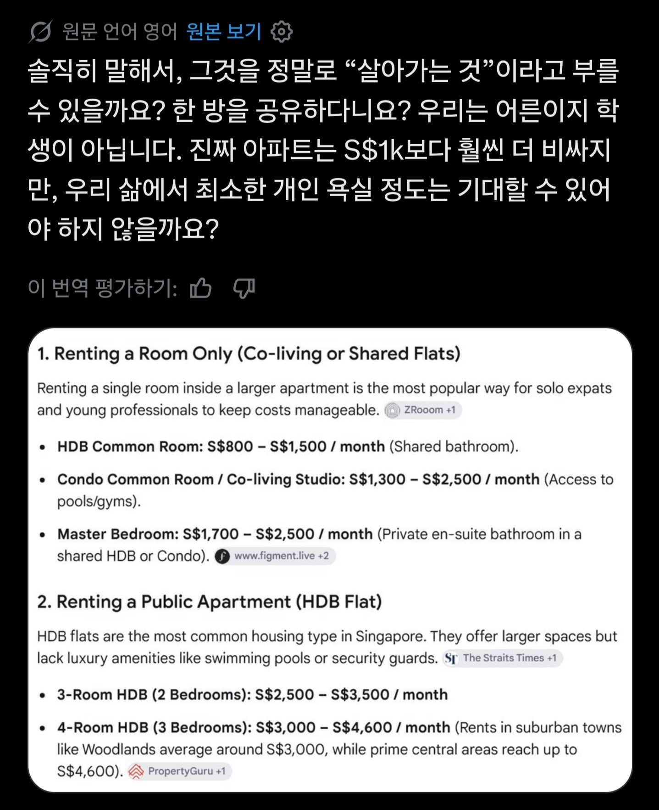
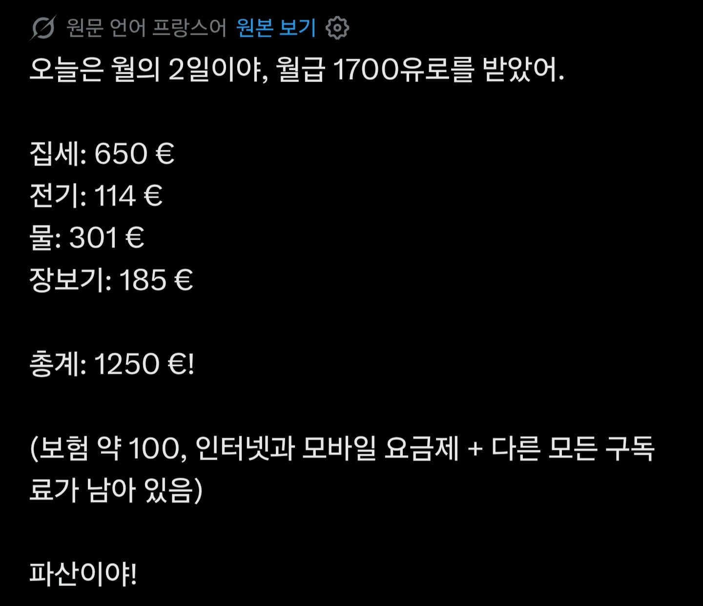
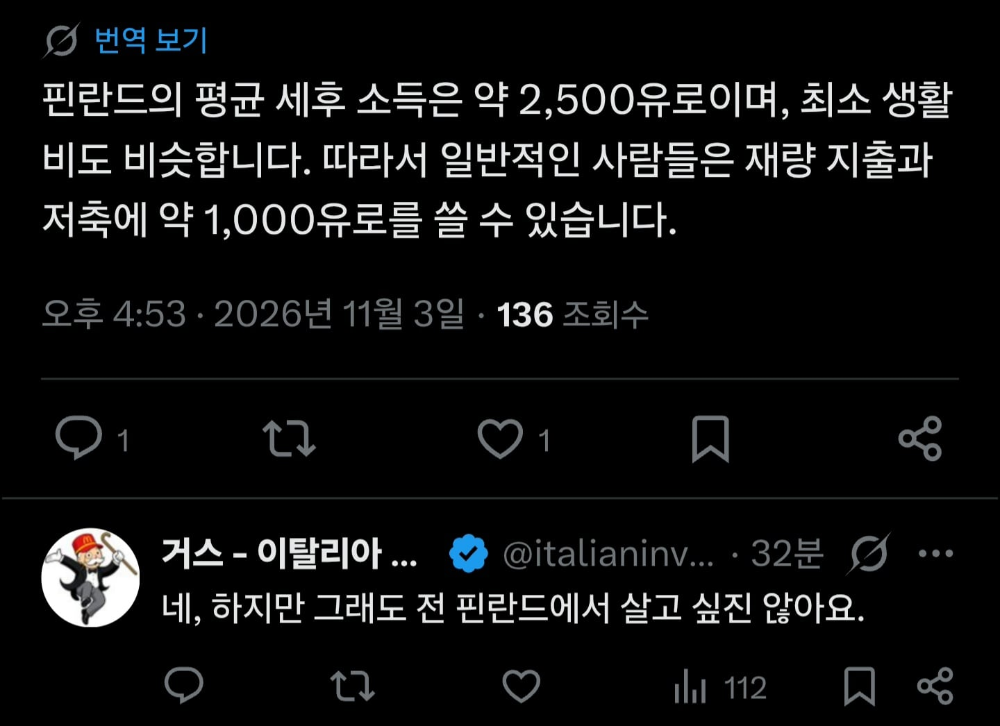

1싱가포르달러 = 1000원
즉 세후 400 벌어 다쓰고 200 남김
단 셰어하우스 거주가 조건

제대로된 집으로 갈라믄 임대료에만 400중 250은 써야하는듯
따흐앙

물론 야로나 사태 이후 인세의 지옥이 강림한 코쟁이들에 비하면 양반임

한때 함리스조선의 최종 목적지였던 북유럽도 예외는 없다
아나바다 정신의 평범한 K-직장인은 커녕 캥거루족 쿠돌이쿠순이와 좋은 승부 가능한 상태
둠버지 이제야 깨달아요.. 어서 헬지구 리셋 버튼이 시급합니다
어서오세요 핀란드에